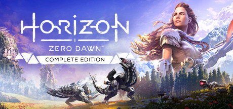

Open World / Soulslike
《艾尔登法环》
我关注地图如何用远景地标、赐福与失败回收建立探索意图。开放世界的价值不在任务图标数量，而在玩家能否自己形成“下一步去哪里”的判断。
01 / Played & Studied
只列简历中能够明确确认的深度体验，不虚构游玩时长或段位。每款游戏保留一个最值得继续研究的设计问题。
Open World / Soulslike
我关注地图如何用远景地标、赐福与失败回收建立探索意图。开放世界的价值不在任务图标数量，而在玩家能否自己形成“下一步去哪里”的判断。

Action RPG / Cultural Adaptation
我关注章节式推进、Boss 表演与传统文化视觉转译。高密度内容不必依赖巨量地图，关键是战斗、场景和叙事能否共同留下记忆点。

Action / Skill Mastery
我关注格挡、架势与读招怎样把操作反馈变成学习曲线。难度只是结果，真正驱动玩家重试的是“我知道刚才错在哪里”。

Narrative RPG / Quest Design
我关注支线任务如何通过人物动机、选择后果与世界状态承担叙事价值。好支线不是奖励包装，而是让玩家更理解这个世界为何如此运转。

Open World / Tactical Hunt
我关注资源采集、弱点拆解、装备准备与机器生态如何串成狩猎循环。开放世界战斗需要让“战前观察”与“战中执行”同样有价值。
补充经历：有 FPS 网游竞技游戏游玩经验。原始简历未记录具体作品名、段位和时长，因此本页只在类型层讨论信息差、地图控制与团队协同。
02 / Genre Lab
统一从核心承诺、短循环、压力来源、内容结构与可迁移判断五个维度拆解。
参考体验：《艾尔登法环》《只狼》《黑神话：悟空》
难度不是目的。每次失败都让玩家获得可复用的信息，下一次尝试才有意义。
我的迁移：在《暮鸦之墓》中优先明确敌人前摇、攻击冷却、命中反馈与复生泉回收点，让失败可理解而不是只提高敌人数值。
参考体验：《艾尔登法环》《巫师 3》《地平线》
地图不是内容清单。地标、路径、事件与奖励必须共同回答“为什么现在要去那里”。
我的迁移：《暮鸦之墓》把世界收敛为主城、野外与副本三类区域，用安全度和收益差异建立路线判断，先验证节奏再扩大地图。
参考体验：《巫师 3》《地平线》《黑神话：悟空》
剧情不是战斗之间的说明书。角色目标、玩家行动和世界后果需要落在同一条因果链上。
我的迁移：《雾港疑云》用真相度和镇民信任记录行动后果，信件承担补充叙事，结局由累计判断而非单次按钮决定。
体验口径：有 FPS 网游竞技经验，未公开具体作品与段位
枪法决定局部胜负，信息处理与空间协同决定一支队伍能否持续赢。
我的判断：竞技系统必须优先保证信息可读、输入一致和失败归因；在基础公平未成立前，新增角色与武器只会放大噪音。
设计研究：《放开那个女巫》《三国文字合成塔防》自研验证
策略感不来自规则数量，而来自有限资源下存在多个合理答案，并且代价足够清晰。
我的迁移：用 3 AP 控制《放开那个女巫》的回合预算；用金币、粮食与 8 条合成线构成《三国文字塔防》的长期资源冲突。
03 / Analysis Method
先找到玩家追求的结果，再逐层检查系统是否真的服务这个结果。
玩家选择这类游戏，最想获得哪一种独特感受。
30 秒到 3 分钟内，玩家反复进行哪些判断与动作。
时间、空间、资源、信息或操作如何迫使玩家取舍。
关卡、任务、敌人与奖励如何分阶段教学和检验。
成功与失败能否让玩家理解原因，并形成下一步目标。